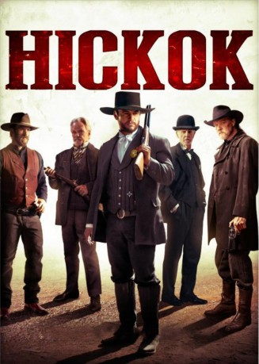

#7589 Hickok
 
 IMDB-Wertung: 4.7 / 10
IMDB-Wertung: 4.7 / 10  Tomatometer: 57
Tomatometer: 57  Metascore: 49
Metascore: 49 
Legendary lawman and gunslinger, Wild Bill Hickok, is tasked with taming the wildest cow-town in the west. While delivering his own brand of frontier justice, the infamous hard-drinking gunfighter's reputation as the fastest draw in the west is put to the test.
Jahr: 2017
Dauer: 88 Minuten
FSK: 16
Land: USA Studio: Cinedigm Entertainment GroupTonspuren: DTS - ,
Untertitel: Deutsch,
Auflösung: 1080p (1920x808) Größe: 8519 MB
Genre: Western
Regisseur: Timothy Woodward Jr.
Drehbuch: Michael Lanahan
Soundtrack:
Darsteller:
 Luke Hemsworth als Wild Bill Hickok
Luke Hemsworth als Wild Bill Hickok Trace Adkins als Phil Poe
Trace Adkins als Phil Poe Kris Kristofferson als George Knox
Kris Kristofferson als George Knox Bruce Dern als Doc Rivers O'Roark
Bruce Dern als Doc Rivers O'Roark Cameron Richardson als Mattie
Cameron Richardson als Mattie- Kaiwi Lyman als John Wesley Hardin
- Hunter Fischer als Joey
 Robert Catrini als Sherif Akers
Robert Catrini als Sherif Akers- Britain Simons als The Kid
- Kimberly Alexander als Lou-Ann
- Shane P. Allen als Horse Rider
- Terral Altom als The Stranger
- Beau Bassewitz als Dealer
- Max Bogner als Preacher Jenkins
- Johnson Brandi als Nurse
- Stephen Brown als Fred
- Tara Brown als Nurse
- Angela Cole als Saloon Girl
- Bertrand-Xavier Corbi als Sullivan
- Shawna Craig als Saloon Girl
- Lauren Dearmon als Saloon Girl
- Alan Donnes als Ben
- Brent Duffey als Drover 3
- Lee Ellis als Drover #2
- Lawrence Ford als Saloon patron
- Robert Goon als Goon
- Steve Holland als Buckaroo
 Manu Intiraymi als Slade
Manu Intiraymi als Slade- Mitchell L. Johnson als Drover #1
- G Jerry Jones als Saloon Patron
- Ryan W. Kelly als Young Sodbuster
- Jon Klaft als Mills
- Patricia Lauriet als Barmaid
- Jason Lively als Ike
- Drew Macias als Drover #4
- Shannon Makhanian als Glenda
- Paul Pikus als Saloon Cowboy
- Ardeshir Radpour als Soldier
- Andrew Shelton als Bartender
 Peter Sherayko als Trail Boss
Peter Sherayko als Trail Boss- Charles Smith als Buck
- Christopher Troy als Sodbuster
- Jordan Wilson als Handsome Cowboy
- Peter Xifo als Sam Needham
 Bridger Zadina als Private Pyle
Bridger Zadina als Private Pyle- Sofie Gällerspång als Saloon girl , uncredited
- Larry Poole als Cowboy gunman , uncredited
- Casey VanRyan als Cowboy city slicker , uncredited
- Dennis Nicomede als Judge
- Monte Stone als Ringo
Datei: X:\HD-Western-2000-2015\Hickok (2017, FSK16, 1920x808).mkv seit 21.11.2017
Festplatte: HD Eastern+Western
 Es gibt insgesamt 61 Filme in der Gruppe 'HD-Western-2000-2015'
Es gibt insgesamt 61 Filme in der Gruppe 'HD-Western-2000-2015'